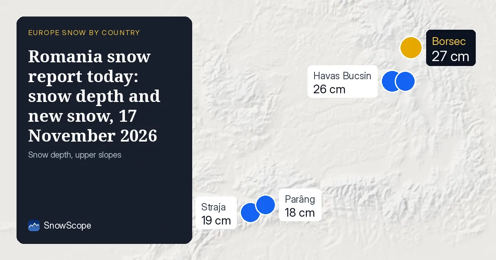
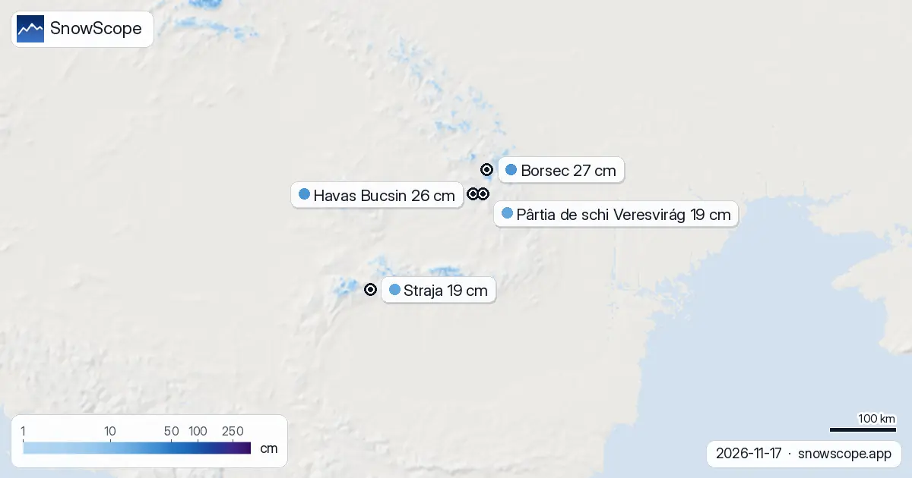

Mild day in Romania: the snow retreats to 1,700 m
Yesterday about 6,630 km² was white in Romania; today 4,170 km² is left, 2,460 km² less in one day.
See the live snow forecast for Borsec in the SnowScope appSnow depth, powder alerts and the 3D map, free.
A mild day eats the snow
Mild air hits the thin snow of the valleys first. Expect wet, heavy snow low down in the afternoon and firm, icy patches the next morning.
The white area in Romania stands at about 4,170 km² today, 2,460 km² less than yesterday. Roughly 6 % of the country's mapped mountains and hills are covered.
| Resort | Snow depth | New snow, 72 h | Coming, next days | Top |
|---|---|---|---|---|
| Borsec | 27 cm | 0 cm | 0 cm | 1,074 m |
| Havas Bucsin | 26 cm | 1 cm | 3 cm | 1,494 m |
| Straja | 19 cm | 2 cm | 1 cm | 1,865 m |
| Pârtia de schi Veresvirág | 19 cm | 0 cm | 0 cm | 1,096 m |
| Parâng | 18 cm | 6 cm | 3 cm | 1,768 m |

From the valleys to the summits
By height, the picture looks like this: 500-1,000 m: on average under 1 cm (1 % of the ground white); 1,000-1,500 m: on average under 1 cm (8 % of the ground white); 1,500-2,000 m: on average 2 cm (49 % of the ground white); 2,000-2,500 m: on average 9 cm (97 % of the ground white).
Best resorts right now
At the top of the list, Borsec reports 27 cm.
Then come Havas Bucsin (26 cm), Straja (19 cm), Pârtia de schi Veresvirág (19 cm) and Parâng (18 cm).
At Havas Bucsin: 1 cm of fresh snow over three days, 3 cm more expected by Friday 20 November.
20 of the 52 resorts we follow in Romania have snow on their upper slopes.
The rest of the shortlist: Straja: 19 cm on top, 2 cm in three days, 1 cm expected; Pârtia de schi Veresvirág: 19 cm on top, 0 cm in three days, 0 cm expected; Parâng: 18 cm on top, 6 cm in three days, 3 cm expected.
What is coming
Expect up to 8 cm on the snowiest slopes by the third day; the seven-day total reaches 12 cm.
The snowiest day looks like Friday 20 November, with up to 4 cm in the snowiest spots.
What it means on the slopes
The snow is retreating uphill, so plan on the higher lifts and avoid the low valley runs.
Keep an eye on the forecast: the coming snow could change the picture quickly.
Snow on the ground
Most of the ground is white from about 1,700 m up. Mild days have cost 3,850 km² since the 8,020 km² of a week ago.
Where the fresh snow fell
The Retezat, the Parâng Mountains and the Rodna Mountains got the most fresh snow over three days, up to 4 cm.
About 600 km² received at least 5 cm.
The neighbours today
For comparison, the neighbours on the same day: Bulgaria: 1 % white, deepest Bansko with 4 cm, up to 7 cm in the week ahead; Ukraine: 13 % white, deepest Драгобрат with 11 cm, up to 20 cm in the week ahead.
Planning a day on the snow
Above 2,000 m the ground is almost fully white (97 % covered), so runs up there have a continuous base.
Between 1,500 m and 2,000 m the cover is patchy, about 49 % white: expect grass and stones between the snow.
Below 1,500 m the slopes are still almost bare.
Tips for skiers
- Fresh snow on a cold base sticks badly: take care on steep slopes.
- Early-season snow is thin over rocks: ski the groomed runs first.
- Morning snow is firm after a clear night: wait for the sun on south faces.
About these numbers
Resort snow depths are the deepest snow on the resort's upper slopes from the SnowScope snow model (about 1 km, run of 17 November); they are estimates for an area, not a measurement at one point. Station values are measurements on the date shown. Forecasts can change. Always read the official avalanche bulletin before going off-piste.
Cite this report
For research, teaching or the press: the numbers and charts are free to reuse under CC BY 4.0 with this citation.
SnowScope (2026), Mild day in Romania: the snow retreats to 1,700 m, https://snowscope.app/blog/en/2026/11/romania-snow-report-17-november-2026.html, accessed 2026-11-17
SnowScope (Atlas Labs). (2026, November 17). Mild day in Romania: the snow retreats to 1,700 m. SnowScope snow reports. https://snowscope.app/blog/en/2026/11/romania-snow-report-17-november-2026.html
BibTeX
@misc{snowscope2026romaniasnowreport17novem,
author = {{SnowScope (Atlas Labs)}},
title = {Mild day in Romania: the snow retreats to 1,700 m},
year = {2026},
month = nov,
howpublished = {\url{https://snowscope.app/blog/en/2026/11/romania-snow-report-17-november-2026.html}},
note = {Published 2026-11-17 12:53 UTC; accessed 2026-11-17}
}· CC BY 4.0 · Methods, data and tools →
Borsec: snow and temperature by height, this winter vs last (tools) →
Follow Borsec
Free: a message when fresh snow is coming, and the forecast every morning.
More snow reports

Saas-Fee lifts reach 3556 m where our snow history shows 100 % of past winters have at least 30 cm of snow by mid-December.

Puy-Saint-Vincent pairs a 44 EUR adult 1-day pass with solid December snow higher up, compared here with its big neighbour Serre Chevalier.

Pila above Aosta pairs a flat 60.00 EUR day pass with reliable December snow on its upper slopes.